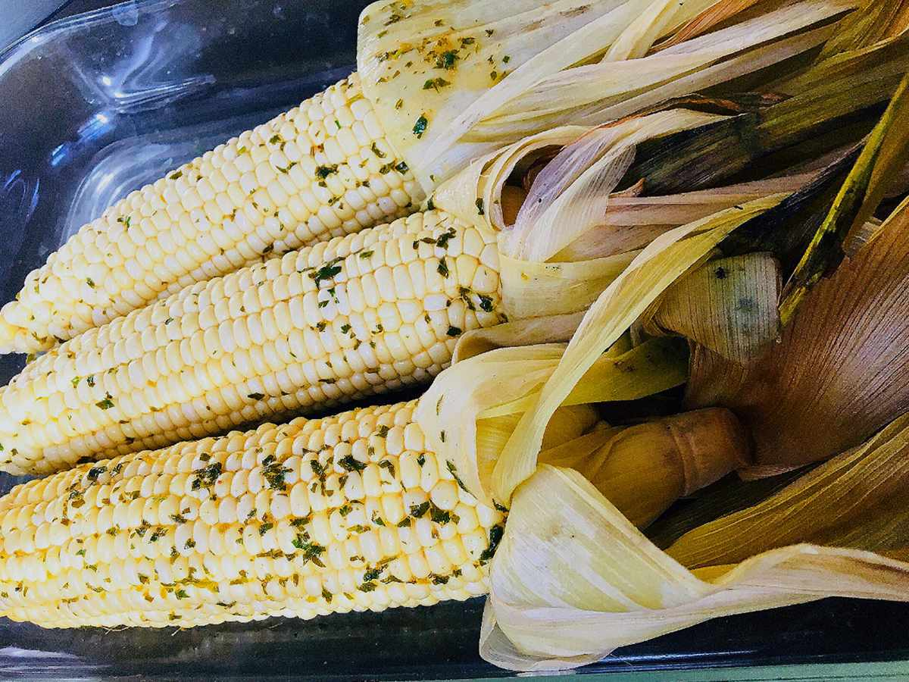

Smoked Corn on the Cob

Description
Smoked corn on the cob is tender, juicy, and delicious! Top with a smoky lime-paprika butter right before serving to deliver a whole new dimension of flavor.
Ingredients
- 4 ears corn on the cob, silks removed
- mesquite wood chips
- 2 tablespoons butter, melted
- 1 tablespoon chopped fresh cilantro
- 1 lime, zested
- 1 teaspoon smoked paprika
- salt and ground black pepper to taste
Steps:
- Place corn back in their husks in a large pot of water and soak for 2 hours. Soak wood chips in another container of water for about 30 minutes.
- Preheat a smoker to 250 degrees F (120 degrees C). Place corn, unstacked, onto wire racks. Place the racks into the smoker. Add wood chips according to the manufacturer's directions. Smoke until corn reaches your desired level of tenderness, 60 to 75 minutes.
- Combine butter, cilantro, lime zest, lime juice, and paprika in a small bowl. Peel back the husks and brush corn with butter mixture. Season with salt and pepper.